Alejandro Fabian Torrico Rojas
Ingeniería Industrial y de Sistemas
Universidad Privada de Santa Cruz de la Sierra (UPSA)
Bolivia es líder mundial en quinua, pero Santa Cruz no cuenta con infraestructura industrial para transformar el grano local en harina. Esto genera:
"Evaluar la factibilidad técnica, económica y financiera para la implementación de una fábrica de harina de quinua en Santa Cruz de la Sierra."
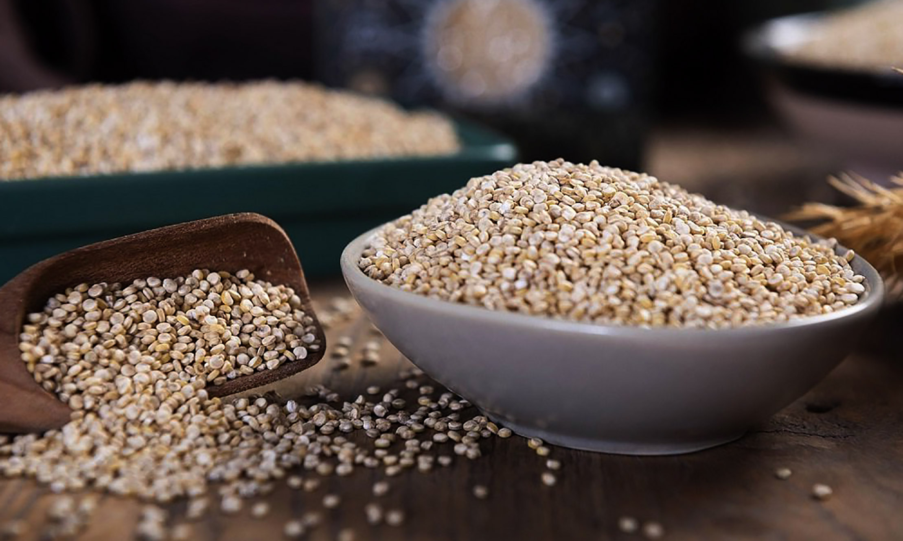
Quinua: Grano de
Oro
Industrialización local en el oriente
boliviano
Evaluar la disponibilidad, calidad, costos y condiciones de suministro de la quinua e insumos.
Analizar segmentos, hábitos, precios y canales; estudiar la oferta y demanda y definir la estrategia comercial.
Determinar tamaño y localización; diseñar tecnología, procesos y distribución de planta, evaluando el impacto ambiental.
Definir la personería jurídica, los permisos necesarios y la estructura organizativa de la empresa.
Estimar inversión, costos operativos, capital de trabajo y financiamiento; evaluar flujos de caja, VAN, TIR y análisis de sensibilidad.
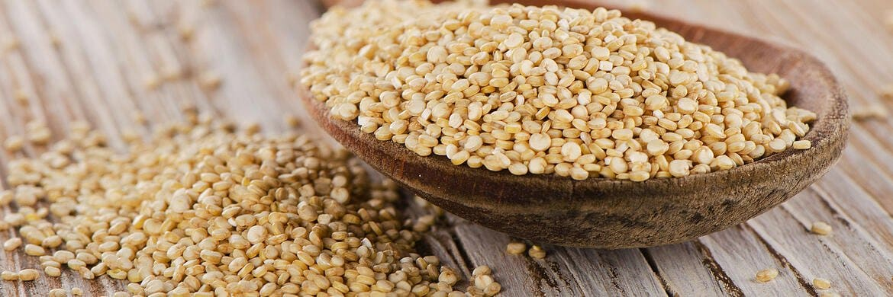
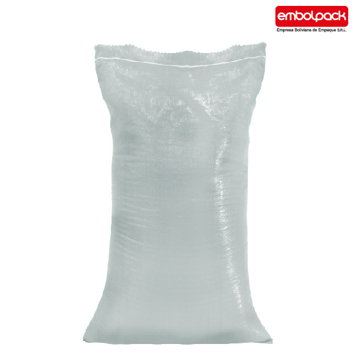
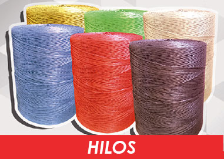
N × Consumo × A × U = Demanda potencial
Harina 100% natural, sin gluten. Empaque industrial en bolsas laminadas de 25kg, operando bajo normativas SENASAG y BPM.
Estrategia de penetración: Bs. 56 por kg (Bs. 1,400 el saco de 25kg). Precio ajustado a disposición de pago validada.
Distribución orientada al canal B2B directo (institucional) y supermercados selectos para asegurar rotación.
Ferias agroindustriales, promotores con asesoría técnica a panaderías, degustaciones y Marketing Digital.
Inestabilidad y bloqueos afectan logística. Incentivos tributarios (Tasa Cero IVA maquinaria).
Inflación 15.53%. Tipo cambio paralelo volátil. Créditos productivos a 11.5%.
46% priorizan naturalidad. Tendencia saludable creciente en jóvenes (18-35).
Maquinaria importada costosa. Oportunidad en automatización y e-commerce.
Ley 1333 exige EIA. Sequías afectan quinua. Tendencia envases sostenibles.
SENASAG, BPM, registro sanitario, licencia ambiental. Ley General del Trabajo.
Las harinas tradicionales (trigo, maíz, arroz) son más baratas y de consumo arraigado. La quinua debe competir destacando su valor funcional y estar libre de gluten.
Clientes B2B (panaderías, industrias) compran en volumen y presionan precios. Se requiere fidelización mediante calidad y certificación constante.
Pese a ser Bolivia un gran productor, el suministro de quinua fluctúa por factores climáticos. Los repuestos de maquinaria importada generan dependencia.
Mercado compuesto por microempresas de alcance regional. Pocas marcas consolidadas en supermercados cruceños, lo que deja espacio para un producto nuevo.
Expresado en Sacos de 25 kg
| Año | 1 | 2 | 3 | 4 | 5 |
|---|---|---|---|---|---|
| Producción | 9,711 | 10,605 | 11,563 | 12,591 | 13,692 |
| Stock (7d) | 186 | 203 | 221 | 241 | 262 |
Evaluación multicriterio (80% Técnico, 20% Económico)
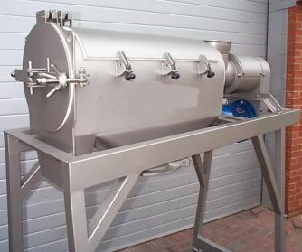
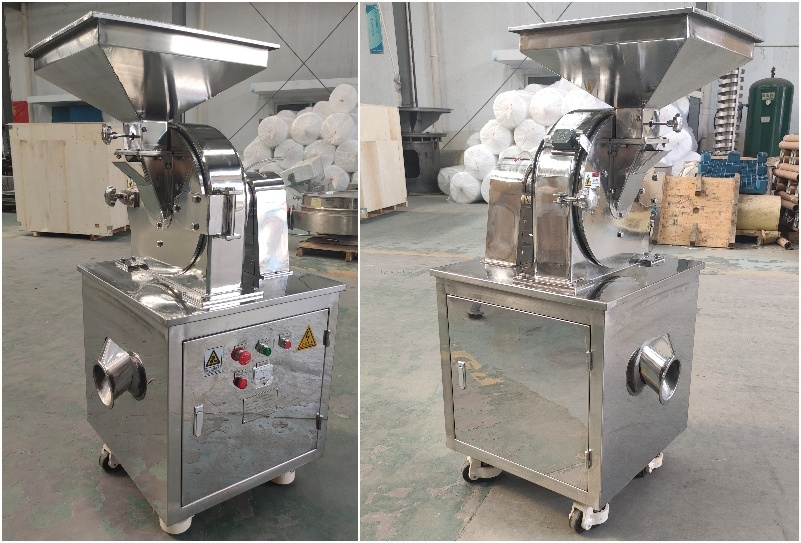
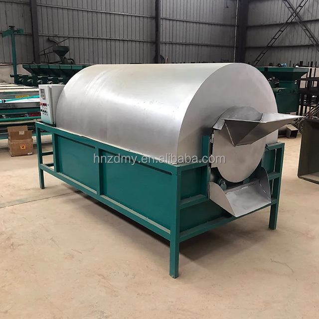
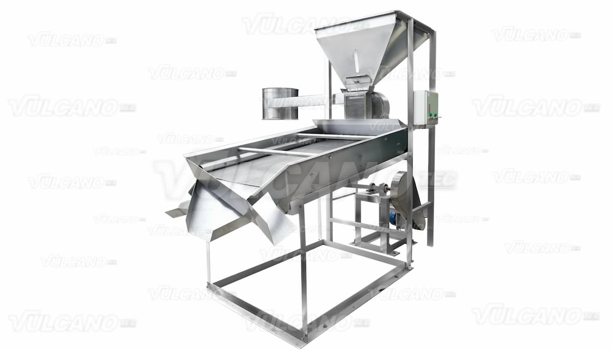
Clasifica el grano seco y separa impurezas por tamaño antes de la molienda.
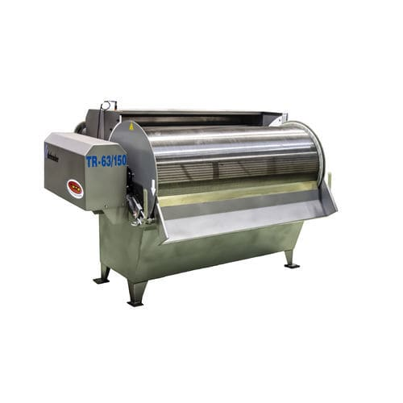
Doble cubierta para eliminar impurezas finas tras el lavado, previo al secado.
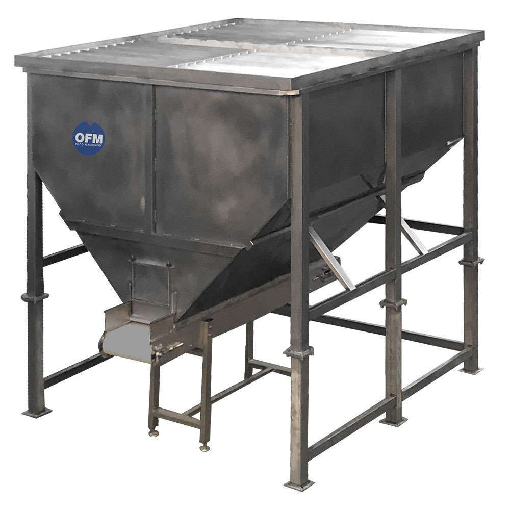
Dosifica el grano hacia limpieza y molienda. Acero inoxidable con vibración antiobstrucción.
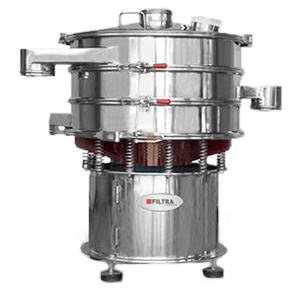
Filtra la harina molida para separar grumos. Se usa post-molienda, previo al envasado.
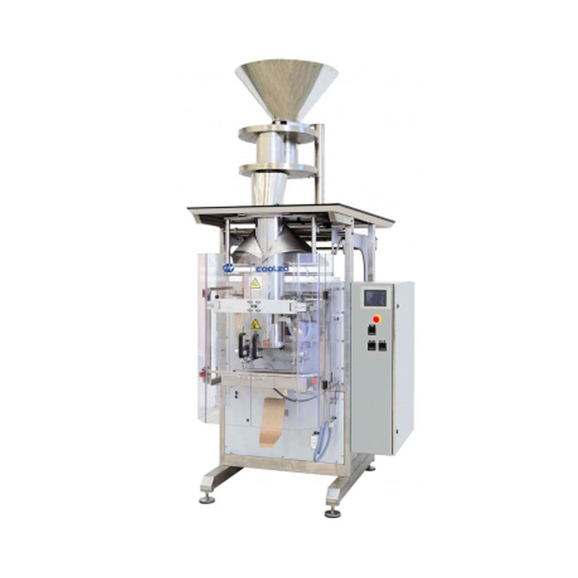
Llena y cierra los sacos de 25 kg mediante costura. Inversión total en maquinaria y equipos: Bs. 348,094.
Opción C — Distrito Municipal 5, Av. Beni entre 6to y 7mo anillo. Galpón de 750 m² con luz trifásica (Bs. 12,500/mes).
Secuencia fija de operaciones, recorridos cortos, sin cruces entre material y personal y separación entre áreas.
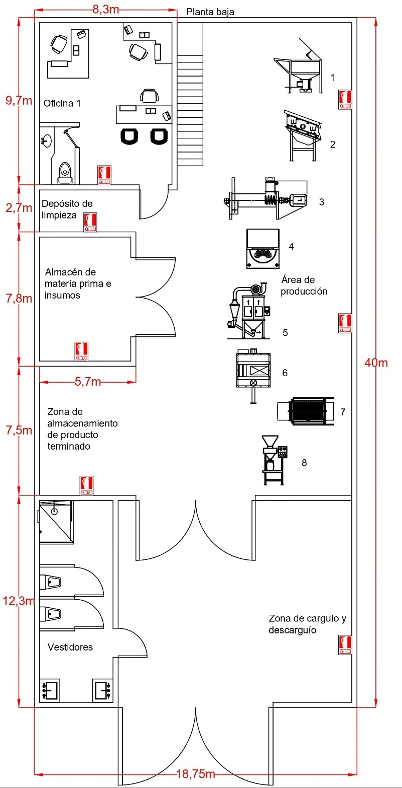
Planta baja — zonas y secuencia de máquinas (1–8)
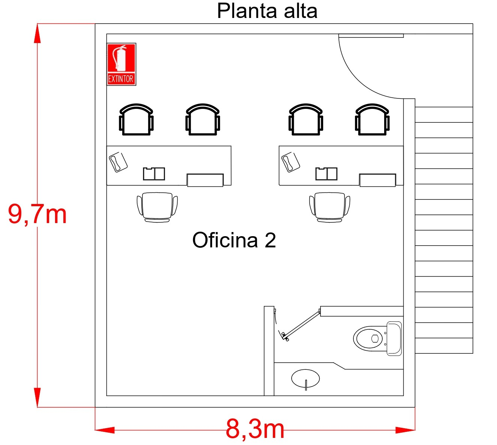
Planta alta — Oficina 2 y servicios
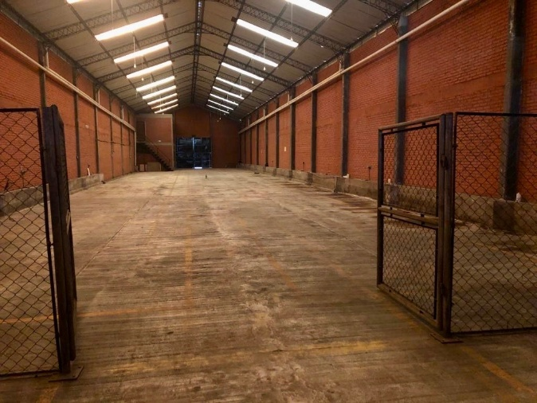
Galpón real — Distrito 5
Cumplimiento de la Ley N.º 1333:
Cumplimiento SENASAG y BPM:
| Componente | Monto (Bs.) | % |
|---|---|---|
| Activos Fijos | 398,131 | 64.7% |
| Capital de Trabajo | 131,256 | 21.3% |
| Activos Diferidos | 86,050 | 14.0% |
MP quinua, bolsas e hilos.
Sueldos, alquiler, servicios, depreciación.
La combinación de capital propio con financiamiento externo permite sostener la rentabilidad y reducir el riesgo asociado a un endeudamiento total. La cuota constante facilita la planificación del flujo de caja.
Modelo CAPM ajustado para Bolivia (Riesgo País 10.90%, Beta 2.37).
La TIR (150.5%) supera holgadamente el riesgo exigido.
Cantidad mínima de sacos para no generar pérdidas:
65% de la producción del Año 1 (9,711). Margen de seguridad del 35%.
Simulación de escenarios pesimistas (con financiamiento):
La implementación de una fábrica de harina de quinua en Santa Cruz de la Sierra es viable en los aspectos técnico, comercial, económico y financiero.
Asegurar el abastecimiento de quinua en la región mediante convenios con productores locales, para reducir la dependencia de otras zonas del país.
Realizar un estudio de mercado más detallado que incluya segmentación por niveles socioeconómicos y un análisis comparativo de precios y marcas competidoras.
Revisar las opciones tecnológicas y analizar la posibilidad de adquirir maquinaria nacional o regional, para facilitar el mantenimiento técnico a largo plazo.
Monitorear de manera continua los indicadores financieros y realizar un análisis de sensibilidad actualizado cada año.
Alejandro Fabian Torrico Rojas
UPSA